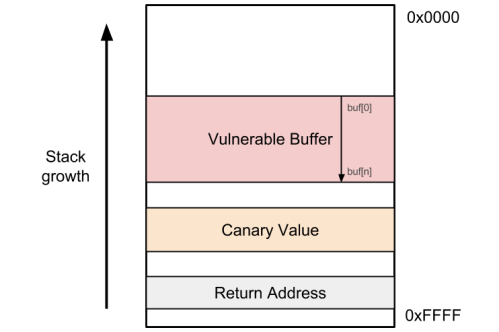

# Exploit Protections - Stack Canary
•
https://en.wikipedia.org/wiki/Buffer_overflow_protection#Canaries•
https://ocw.cs.pub.ro/courses/cns/labs/lab-08*** stack smashing detected ***The compiler and/or programmer, when a function is called, can place a special value on the stack (unknown to the attacker) between the buffer and the retrun address. This value is known as a
canary.
(The terminology is a reference to the historic practice of using canaries down coal mines. The canary would be affected by toxic gas earlier than the miners, and die, thus providing a biological warning system to the workers in the mine.)
When the called function returns after running, the canary value gets checked against a 2nd copy of the value (which is stored elsewhere - could be a variable, or in a register, whatever).
If the canary value has changed - the program exits and reports
*** stack smashing detected ***If the canary is the same - the program continues to the return address.
### gcc switches
• Enable canaries -
-fstack-protector• Disable canaries -
-fno-stack-protector## Bypassing Stack Canaries
• Stack canaries only protect against buffer overflows
◇ Arbitrary memory writes (e.g. to offsets that can be controlled by the attacker) can be crafted so that they never touch the canary value
• Stack canaries are vulnerable to the same set of attacks as ASLR
◇ You could guess/retrieve the canary value via an information leak
◇ You could guess/retrieve the canary value via brute force
• You might be able to modify the reference value